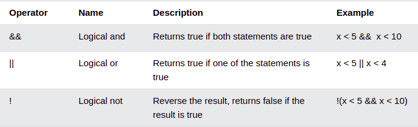

To code you will need a text editor(or IDE) and a compiler like gcc to compile your C files. In terms of development tools I would say consider one of these:
I would go with Visual Studio Code, it's available on Windows, Mac Linux. If you want something that may require less to think about consider CLion, this is a full C programming IDE.
To install gcc on Linux check out this article, the critical line to run as you will see in the article is, sudo apt install build-essential
1 #include <stdio.h>
2
3 int main(int argc, char* argv[]) {
4 printf("Hello, World!\n");
5
6 return 0;
7 }
Above is your first C program. We start by inputting the Standard I/O(Input and Output) library so that you can use the printf function to display something on the screen.
After we compile the program using the command: gcc -o hello hello.c, we run it the executable generated by the compilation process as follows: ./hello. C will look for a function called main to begin execution of the program, this is the where the program starts running line by line, so it is important to always define a main function.
Now that C has identified the main function it executes line 5 which prints the words "Hello, World!" on the create. Note we use \n to put a new line after printing the words.
Before moving on I would like to say watch your semicolons(;)! Each statement in C ends with a semicolon(;), leaving out semicolons is a leading cause of error for C novices.
1 #include <stdio.h>
Let the fun begin, in this section we will see how we can use C as our favourite calculator to do basic arithmetic operations.
2
3 int main(int argc, char* argv[]) {
4 int a = 1;
5 int b = 1;
6
7 int a_plus_b = a + b;
8 int a_minus_b = a - b;
9 int a_times_b = a * b;
10 int a_divide_b = a / b;
11 int a_modulus_b = a % b;
12
13 printf("a + b = %d\n", a_plus_b);
14 printf("a - b = %d\n", a_minus_b);
15 printf("a * b = %d\n", a_times_b);
16 printf("a / b = %d\n", a_divide_b);
17 printf("a %% b = %d\n", a_modulus_b);
18 }
We start in line 4 by declaring the integer(int) variable a and assign it the value 1. Note we can declare first i.e. int a; and assign later in another line a = 1;, as long as we ensure we have assigned a value to a before we use it.
After declaring b and assigning it the value 1 we move onto to lines 7 to 11 where we declare new variables which hold the results of applying arithmetic operations on a and b. Let's take a look at our operators:
+-*/%
After applying our operators and storing the results in new variables e.g. a_plus_b stores the sum of a and b we print the results on the screen. It is important to note that in C when printing a variable we use %(variable type letter) and then provide the variable as a parameters to the printf function. For integers we use %d.
Also note to print % on the screen we have to write it twice. This is because %d serves an important purpose so we have to "escape" it and tell C we actually want it to print a % not to print a variable.
A question you may have is what is modulus? If you have no seen this before then the best way to understand it is that modulus relates to remainder, so 1 divided 1 leaves no remainder but if we had 5 modulues 2 the remainder would be 1 as 2 goes into 5 twice(\(2 \times 2 = 4\)) leaving 1. For more on modulus arithmetic check out this article. Let's consider some examples:
\(4 \% 2 = 0\), 4 divided by two does not leave a remainder.
\(6 \% 3 = 0\), 6 divided by three does not leave a remainder.
How about \(5 \% 2 = 1\), that's because two goes into 5 twice and leaves a remainder 1.
\(5 \% 3 = 0\), 5 divided by three leaves a remainder of one.
\(8 \% 3 = 2\)
Usually you can increase an integer i by one as follows: i = i + 1. We can decrease it by one as follows: i = i - 1. C offers us shorthands for such Incrementing and Decrementing. So for increasing i by one we have:
i++;
For decreasing i by one we have:
i--;
Here is where it gets weired, we can also do the following:
++i; // increment i by 1
--i; // decrement i by 1
What is the difference? If you add the symbols before i the incrementing/decrementing is done first and then the value of i used. If you add the symbols after i the incrementing/decrementing after using the value of i. This matters when we need to use the value of i for accessing data or in a conditional statement as
the order can affect the data that will be accessed or the branching of the program. Consider this:
int marks[5] = {66, 78, 90, 91, 55};
int i = 2;
printf("%d\n", marks[i++]);
i = 2;
printf("%d\n", marks[++i]);
The program will output:
90
91
So in the first case we accessed the array position 2 and then incremented i, while in the second case we first increment i and accessed the integer at array index 3!
A Data type, in programming, is a classification that specifies which type of value a variable has and what type of mathematical, relational or logical operations can be applied to it without causing an error.
Data types in C refer to an extensive system used for declaring variables or functions of different types. The type of a variable determines how much space it occupies in storage and how the bit pattern stored is interpreted.
Popular data types are:
(1) int - used to store integer values, positive or negative.
(2) double - used to store floating-point values(values with decimal points), positive or negative.
(3) char - used to store characters e.g. A to Z or 0 to 9.
Almost all programs will use one of these data types. Integers are commonly used in loops and characters are needed to text based programs. But there is a wide range of data types to pick from in C outside these three, we will discuss them below.
The following table provides the details of standard integer types with their storage sizes and value ranges -
| Type | Storage Size | Value range |
|---|---|---|
char |
1 byte = 8 bits | -128 to 127 or 0 to 255 |
unsigned char |
1 byte | 0 to 255 |
signed char |
1 byte | -128 to 127 |
int |
2 or 4 bytes(commonly 4 bytes) | -32 768 to 32 767 or -2 147 483 648 to 2 147 483 647 |
unsigned int |
2 or 4 bytes(commonly 4 bytes) | 0 to 65,535 or 0 to 4,294,967,295 |
short |
2 bytes | -32 768 to 32 767 |
unsigned short |
2 bytes | 0 to 65 535 |
long |
8 bytes or (4bytes for 32 bit OS) | -9223372036854775808 to 9223372036854775807 |
unsigned long |
8 bytes or (4bytes for 32 bit OS) | 0 to 18446744073709551615 |
To get the exact size of a type or a variable on a particular platform, you can use the sizeof operator. The expressions sizeof(type) yields the storage size of the object or type in bytes.
char is reserved for storing characters and the ASCII representation is used to represent characters using numeric values. Traditionally when you are using integers you first have to think about whether you want the values to be signed or unsigned.
signed data types can be negative or positive while unsigned data types can only hold positive values. Once this decision is made you just have to think about the range of values you want to store, if you want to store values between -32 768 to 32 767 for example you will need 2 bytes and a short hence can be used.
If you want more maybe the 4 bytes offered by int will do. If you want to do "big data" maybe you will need to the biggest data type long. Note the size of int and long differ depending on the setup of the operating system, 32-bit machines will offer less bytes than 64-bit machines. Most machines these days are 64-bit though so you may never need to worry about this.
There may be a lot to think about but for most programs working with int will do! If you are not sure or are not going to deal with crazy ranges of values then int will be ideal in most situations.
The following table provide the details of standard floating-point types with storage sizes and value ranges and their precision -
| Type | Storage Size | Value range | Precision |
|---|---|---|---|
float |
4 bytes | 1.2E-38 to 3.4E+38 | 6 decimal places |
double |
8 bytes | 2.3E-308 to 1.7E+308 | 15 decimal places |
long double |
10 bytes | 3.4E-4932 to 1.1E+4932 | 19 decimal places |
Note: The header file float.h defines macros that allow you to use these values and other details about the binary representation of real numbers in your programs.
void is an interesting keyword, it just means nothing literally and or that no type is available. It most cases like with functions it specifies that no value is available. It is used in three kinds of situations:
| Situation | Description |
|---|---|
| Function returns as void | There are various functions in C which do not return any value or you can say they return void. A function with no return value has the return type as void. For example, void exit (int status); |
| Function arguments as void | There are various functions in C which do not accept any parameter. A function with no parameter can accept a void. For example, int rand(void); |
| Pointers to void | A pointer of type void * represents the address of an object, but not its type. For example, a memory allocation function void *malloc( size_t size ); returns a pointer to void which can be casted to any data type. |
So the type of a variable determines how much space it occupies in storage and how the bit pattern stored is interpreted. These types lead us to the following definitions:
| Type | Description |
|---|---|
| Basic Types | They are arithmetic types and are further classified into: (a) integer types and (b) floating-point types. |
| Enumerated types | They are again arithmetic types and they are used to define variables that can only assign certain discrete integer values throughout the program. |
| The type void | The type specifier void indicates that no value is available. |
| Derived types | They include (a) Pointer types, (b) Array types, (c) Structure types, (d) Union types and (e) Function types. |
The array types and structure types are referred collectively as the aggregate types. The type of a function specifies the type of the function's return value.
In most cases this topic is only relevant when working with doubles and integers. Since these types both relate to numeric types you can convert between the two, for example:
1 int a = 5;
2 double b = (double) a;
3
4 int c = 10;
5 double d = (double) a / (double) c;
6 int e = (int) (c / b);
We cast by putting the desired type in front of the variable we want to cast to another type. This is very useful when we want to divide integers get the decimal result, for example above we want the value of
d to be 0.5 not 0. It will be zero because when we divide integers and get a result that is not a whole number C will truncate the decimal part to leave the whole number, so a number like 9.75 will become
9 not 10 as we see when we do rounding. Make sure you watch out for this! It causes bugs in a lot of programs where mathematical precision is key.
Sometimes truncation is desired like in floor calculations in mathematics, then converting from double to integer like seen in line 6 is very useful.
Assignment operators are used to assign values to variables. For example, we use the assignment operator = to assign the value 10 to a variable called x: int x = 10;.
There are multiple Assignment operators available to us in C, they are:
Comparison operators are used to compare two values. The return value of a comparison is either true (1) or false (0). In the following example, we use the greater than operator > to find out if 5 is greater than 3:
int x = 5;
int y = 3;
printf("%d", x > y); // returns 1 (true) because 5 is greater than 3
This relates to boolean operations in C. The results of these comparisons given boolean values, true/false, which we can then use to determine program branching in conditional statements.
Logical operators are used to determine the logic between variables or values:
Logical operators perform logical operations on a given expression by joining two or more expressions or conditions. It can be used in various relational and conditional expressions.
The #define directive allows the definition of macros within your source code. You can use to define constants, variables that must hold values that do not change. You can use this to store values related to
array sizes, dimensions and locations, values that never change. For example, the value of \(\pi \) nevers changes, this is an example of a value that we could store in a constant. You can define your constants
after including your Header files. For example:
1 #include <stdio.h>
2 #include <stdlib.h>
3
4 #define BOARD_HEIGHT 4
5 #define BOARD_WIDTH 5
6
7 int main() {
8 int area = BOARD_HEIGHT * BOARD_WIDTH;
9 printf("Area = %d", area);
10 return 0;
11}
Here we have the dimensions of rectangle for a game board stored using the variables BOARD_HEIGHT and BOARD_WIDTH defined using macro definitions. It is important that we can only access the
values of these variables, we cannot actually change them.
As programmers we find that is is useful to make notes of what our code does, report bugs or remind ourselves to do something. We use comments to do this and in C we have the following two options:
// this is a comment/* this is a comment */
1 // import the Standard I/O library
2 #include <stdio.h>
3
4 /*
5 This program prints the words Hello, World on the screen for the user.
6 See how this comment to continue over multiple lines!
7 */
8 int main(int argc, char* argv[]) {
9 printf("Hello, World!\n");
10
11 return 0;
12 }
Ensure to use comments to document your code, it's so easy to forget what a piece of code does, comments help jog our memory. Make sure your comments add value, if the function is called a_plus_b writing a comment like // a plus b does not add value, something like // Returns the sum of a and b as an integer is a lot more useful.
In the previous example you will see that the main function was written as int main(int argc, char* argv[]) instead of int main().
This is because the example used there include code logic relating to commandline arugments, C accepts the syntax for the main function in the both cases as long as the main in spelt correctly.
Though if we want to get commandline arugments from a user in C then we need to use int main(int argc, char* argv[]) as the commandline arguments will be in the argv array and argc tells us how many
commandline arguments have been entered by the user. Note that there is always one argument relating to the C program itself so expect argc to be one more than what the user entered, for example, if a user enters the commandline arugment "text" then argc will be 2.
So how do you supply commandline arguments to a program? Simply run your program like so:
./program_executable "commandline argument 1" "commandline argument 2" ... "commandline argument N">
Note you can enter as many commandline arguments as you want. These argument can be words or numbers, whatever you would like the user to enter. You can then use these arguments in your program to produce a particular state, use cases include:
You can download the programs that I ran over in this blog post.
For more checkout C Programming Language(2nd Edition) by Brian W. Kernighan and Dennis M. Ritchie.
Go back to the C Programming Home Page